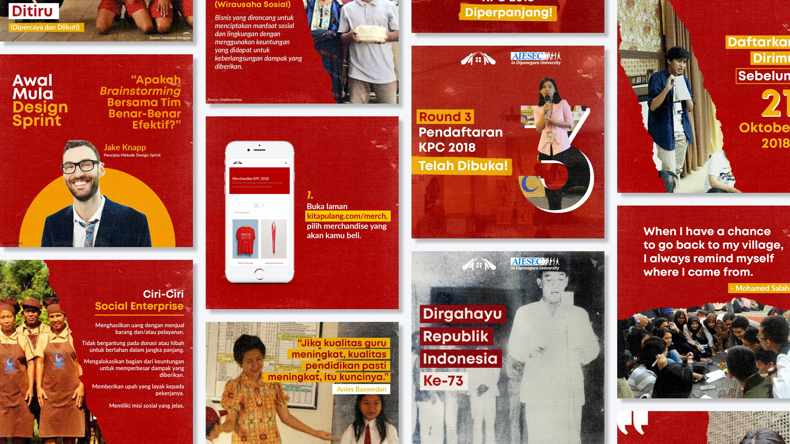
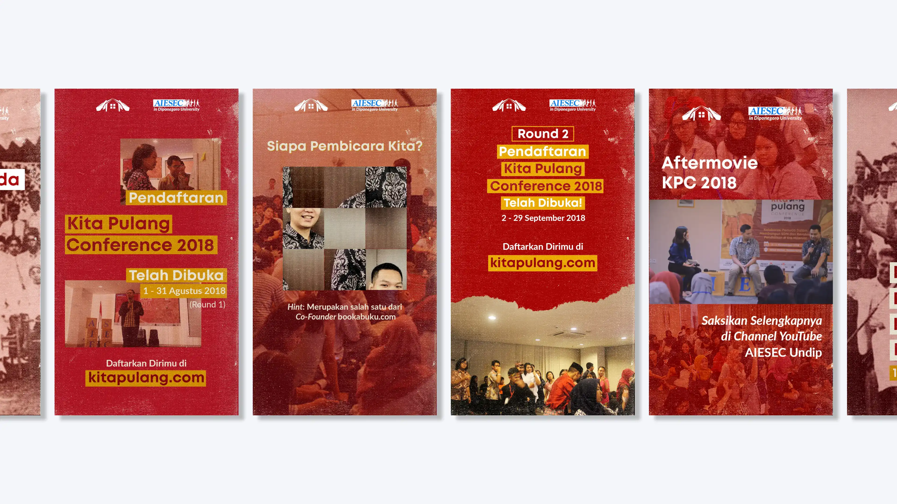
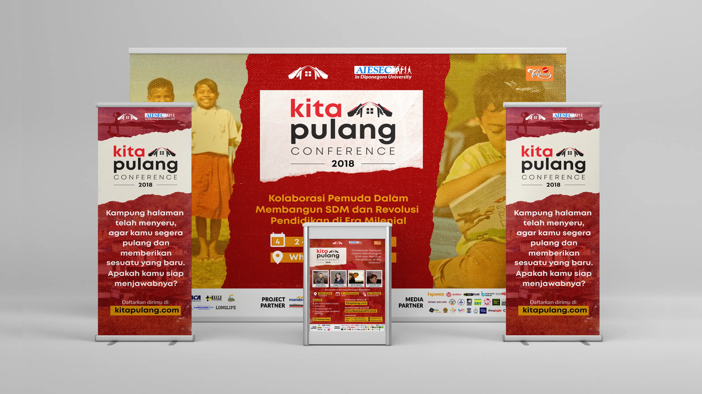
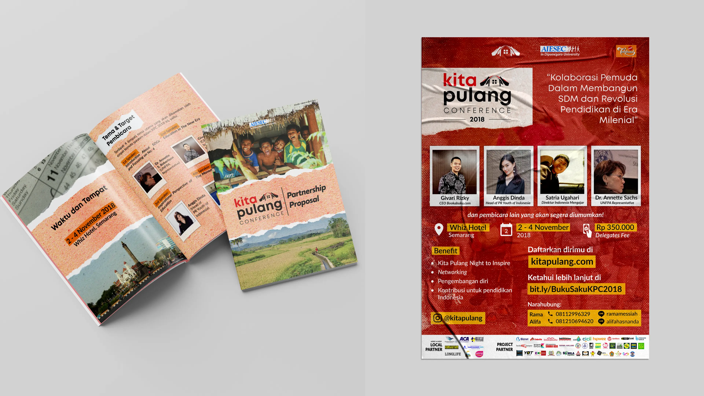
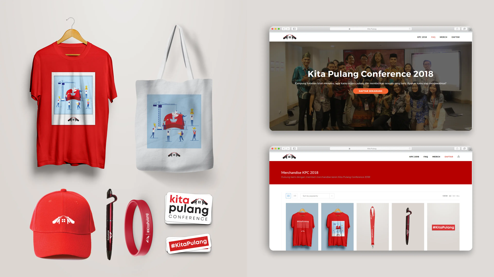

Developing brand identity for a youth social enterprise conference
Kita Pulang Conference - Brand Design

- Project Type
- A volunteering project, part of AIESEC in Semarang.
- Period
- May 2018 - January 2019
- About
- Kita Pulang Conference (KPC) is a national program held by AIESEC Semarang for youth to increase the understanding of social enterprise based on social problems.
- Role
- Brand and Web Designer
- Responsibility
-
- Creating new brand design guidelines
- Creating design for fundraising and promotional needs across physical and digital media
- Arranging digital campaign and managing Instagram account
- Building and managing KPC website
- Tools and Technology
- Adobe Photoshop, Wordpress



